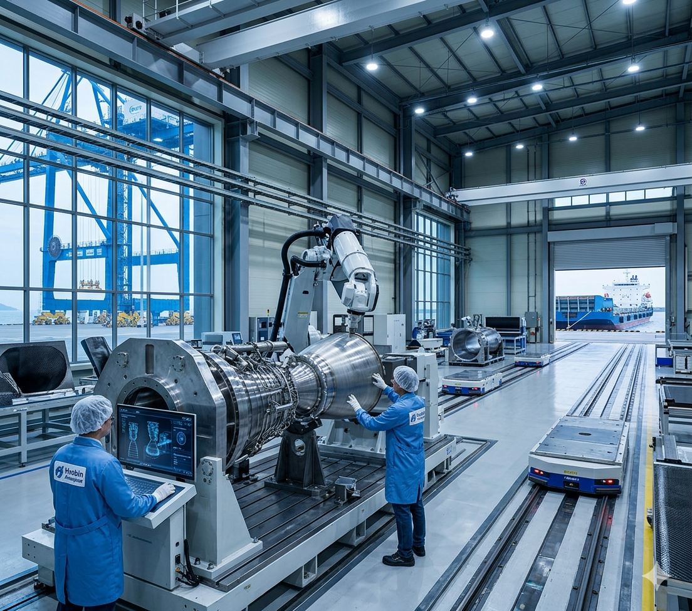

[우주] 한국형 발사체 핵심 부품, 효빈 산단서 품었다... 우주 강국 도약 '엔진 점화'
입력 2026.05.08 20:45
효빈국가산업단지 내 '항공우주 특화 콤플렉스' 조성... 차세대 발사체 부품 양산 돌입
효빈대 항공우주공학과 산학 연계 및 '효빈항물류지구(1호선)' 해상 운송 인프라 최적 평가
박효빈 시장 "만화적 상상력을 현실로 만들던 효빈시, 이제 우주를 향해 쏘아 올릴 것"

[효빈일보 = 박우주 기자] 효빈광역시가 대한민국 우주 시대의 든든한 심장부로 도약한다. 서브컬처와 스마트시티를 넘어, 이제는 우주 강국을 향한 핵심 전초기지로서의 입지를 확고히 다지게 되었다.
8일 과학기술정보통신부와 한국항공우주연구원에 따르면, 2030년 달 착륙선 탑재를 목표로 개발 중인 '차세대 한국형 우주 발사체(KSLV-III)'의 핵심 엔진 부품과 초경량 페어링 제작 사업의 주관 생산 기지로 효빈국가산업단지가 최종 선정되었다. 이에 따라 산단 내 5만 평 규모의 부지에 '항공우주 특화 콤플렉스'가 이번 달부터 본격적인 가동에 들어갔다.
첨단 산업의 쟁쟁한 경쟁 도시들을 제치고 효빈시가 발사체 생산 기지로 낙점된 결정적 이유는 완벽에 가까운 '물류 및 산학 연계 인프라' 덕분이다. 길이 수십 미터, 무게 수십 톤에 달하는 발사체 부품은 육상 운송이 극히 까다롭다. 그러나 효빈국가산단은 파란색(#0077DD) 전동차가 달리는 효빈 도시철도 1호선의 효빈항물류지구역 및 효빈항과 직접 연결되어 있어, 생산된 대형 부품을 특수 바지선과 산업 철도망을 통해 나로우주센터로 직통 운송할 수 있는 최적의 지리적 이점을 갖췄다.
또한, 전국구 수준의 연구 역량을 자랑하는 효빈대학교 항공우주공학과의 R&D 지원과, 앞서 성공적으로 안착한 약산시 바이오 클러스터, 테크노밸리의 AI 인프라가 융합되면서 차세대 정밀 가공의 메카로 평가받았다.
이번 우주 특화 단지 가동으로 효빈시는 향후 10년간 약 3조 원의 경제적 파급 효과와 7,000여 명의 고급 이공계 일자리 창출 효과를 누릴 것으로 분석된다.
박효빈 시장은 이날 특화 콤플렉스 현장 시찰에서 "애니메이션과 게임 속에서 만화적 상상력을 현실로 구현해 냈던 우리 효빈시가, 이제는 그 상상력을 실제 우주를 향해 쏘아 올리게 되었다"며, "문화의 힘으로 도시를 알렸다면, 이제는 항공우주 딥테크(Deep Tech) 산업의 힘으로 효빈의 100년 먹거리를 완벽하게 창출해 내겠다"고 강조했다.